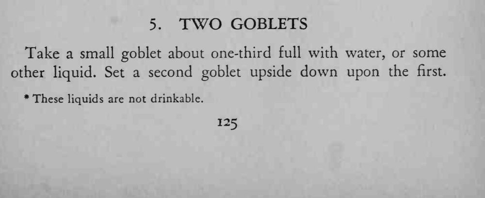
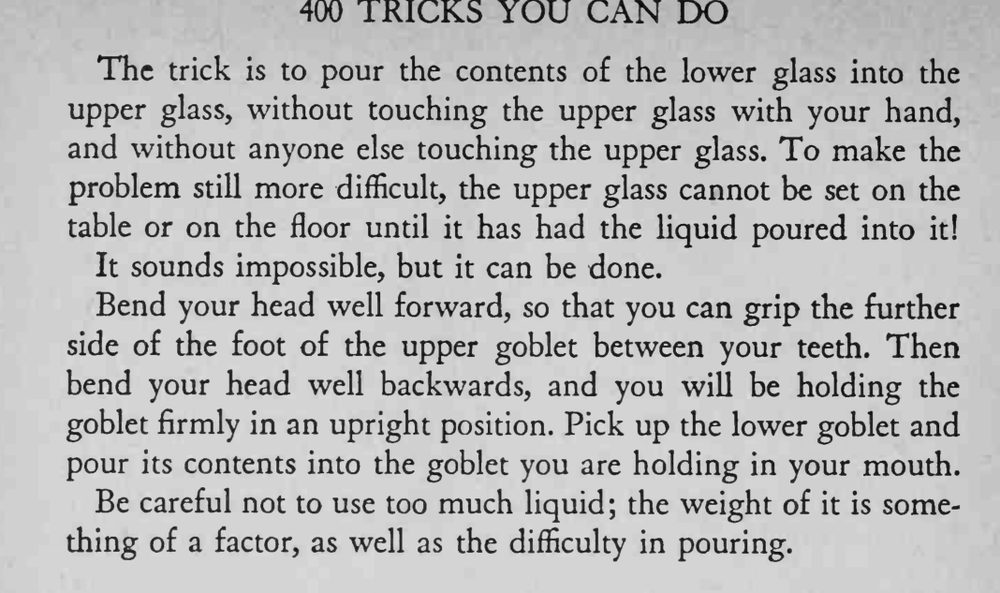

一只小高脚杯里盛着水，上面倒扣着第二只杯子；魔术师不用手碰上面那只杯，就把下面的水倒进上面的杯里，而且全程没让上杯落到桌面或地面。
水要少，咬住杯脚的位置要稳，不然杯子会滑。


Take a small goblet about one-third full with water, or some other liquid. Set a second goblet upside down upon the first. * These liquids are not drinkable. The trick is to pour the contents of the lower glass into the upper glass, without touching the upper glass with your hand, and without anyone else touching the upper glass. To make the problem still more difficult, the upper glass cannot be set on the table or on the floor until it has had the liquid poured into it! It sounds impossible, but it can be done. Bend your head well forward, so that you can grip the further side of the foot of the upper goblet between your teeth. Then bend your head well backwards, and you will be holding the goblet firmly in an upright position. Pick up the lower goblet and pour its contents into the goblet you are holding in your mouth. Be careful not to use too much liquid; the weight of it is something of a factor, as well as the difficulty in pouring.